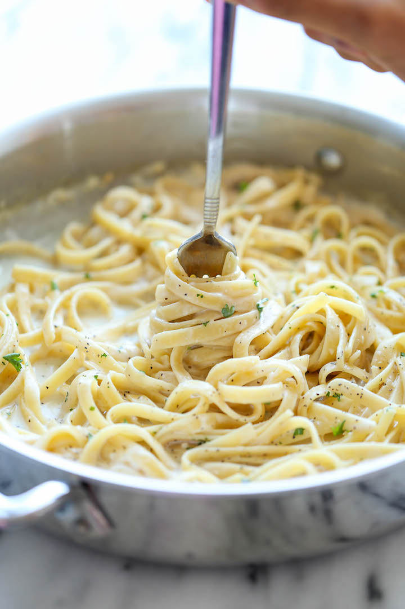

One Pot Garlic Parmesan Pasta
 4 servings
4 servings 30 min
30 min-
 damndelicious
damndelicious
 Meat
Meat Salty
Salty
The easiest and creamiest pasta made in a single pot – even the pasta gets cooked right in the pan! How easy is that?

2 tablespoonsunsalted butter4 clovesgarlic, minced2 cupschicken broth1 cupmilk, or more, as needed8 ouncesuncooked fettuccine1/4 cupfreshly grated Parmeson cheese2 tablespoonchopped fresh parsley leaves- Kosher salt
- Ground pepper
Melt butter in a large skillet over medium high heat. Add garlic and cook, stirring frequently, until fragrant, about 1-2 minutes.
Stir in chicken broth, milk and fettuccine; season with salt and pepper, to taste.
Bring to a boil; reduce heat and simmer, stirring occasionally, until pasta is cooked through, about 18-20 minutes. Stir in Parmesan. If the mixture is too thick, add more milk as needed until desired consistency is reached.
Serve immediately, garnished with parsley, if desired.